← 返回阅读库 · 原论文目录
论文讲解阅读文档 · 机器人学 · v121
Time-Contrastive NetworksSelf-Supervised Learning from Video[1704.06888]
视频时长 00:13:02；讲解文字 5,022 字符；提取讲解画面 16 张。按视频原顺序阅读，每段文字保留时间戳。
文字来自整段视频的自动语音转写，按自然停顿分段，并与 PPT / 论文页面 / 演示画面对齐。未将讲解压缩为摘要；术语、数字和口述公式请结合画面及原论文核对。 阅读稿已校正规范部分明确术语误识别；原始逐字稿和每处修改记录另行保留。
讲解画面为源视频截图（640×360），不是可编辑 PPT 文件。全片按每秒 2 帧扫描内容变化，逐步展开页保留；连续动画保留代表画面。清晰度受源视频限制。
下载完整资料包 · 含离线 HTML、PDF、Word、全部 PPT 画面和字幕。
原论文与材料
Time-Contrastive Networks: Self-Supervised Learning from Video · 下载完整 PDF（15 页）
按时间阅读
00:00:00–00:00:28 · 画面 001
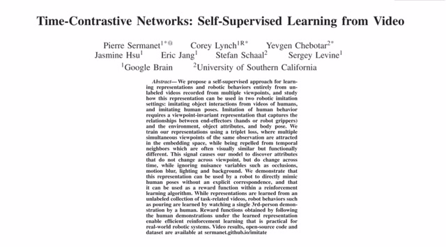
00:00:00–00:00:28 · 画面 001大家好今天我们来介绍 Time Contrastive NetworksSelf-Supervised Learning from Video 这篇文章不是很新了是 18 年的 ICRA 但是它在增强学习模仿学习里面使用了 Self-Supervised 大幅度的减少了我们在原来 Imitation Learning 过程中需要对样本做的标记还是很有意义的一篇工作那么今天的视频中我们
00:00:28–00:01:02 · 画面 002
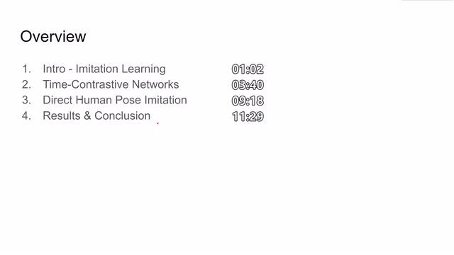
00:00:28–00:01:02 · 画面 002首先会简单介绍一下什么是 imitation learning,及它面临的一些主要的困难。最后呢,我们介绍一下本文 Time Contrastive Networks,它的训练的流程是怎么样的,它是如何构建一个 self-supervised 训练的问题的。那么同时呢,除了针对任务的这个 reinforcement learning,作者们还给安排了一种 direct human pose imitation,就是使这个机器人直接去模仿人类的动作。
那么最后呢是本文的一些结果的展示好的那我们首先来到 imitation learningimitation learning 呢就是使我们的 agent 学习一个专家的轨迹 expert trajectory 能够快速的学习到一个好的 policy 那么回想起我们之前比如说 DPON 或者是 actor-critic 这种直接的 reinforcement learning 的算法呢他们一开始都是从一个 random policy 来的那么他需要不断的去
00:01:02–00:03:02 · 画面 003
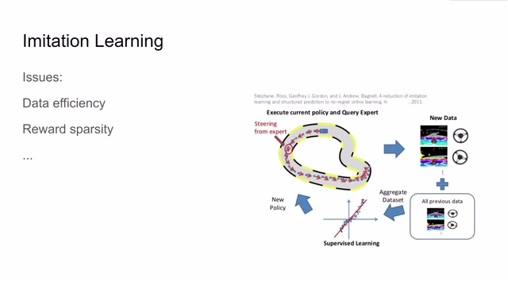
00:01:02–00:03:02 · 画面 003使用随机的策略来搜集样本来逐渐的迭代改善自己的这个 policy，在最后慢慢学到一个好的 policy，这个过程呢其实是非常漫长的，而且对 hyperparameters 非常敏感，你不能说保证每次都能够收敛到一个好的 policy那么在 imitation learning 中呢，我们向 agent 提供了专家的示例，也就是 expert trajectory，我们告诉这个 agent 你按照这个 trajectory 来学习，那么很快啊，对吧，这个 agent 就可以得到一个好的 policy，那么在这个 policy 基础之上呢，我们就可以更有效的收集数据，更快速的进行训练，但是呢 imitation learning 呢还是面临了很多困难
比如说 data efficiency 专家的示例一般都是很昂贵的比如说你要教会 agent 怎么去开车你可能自己要开上一遍一遍可能不够还要多开几遍给 agent 提供很多个训练样本 agent 说才能说学到一个相对好的 policy最简单的例子，比如说它在这里拐弯的时候，拐的角度、拐的时机跟你原来示例的不那么一样，那么这样就会导致它后面的状态就完全改变了。这个时候 agent 见到的环境跟你刚刚示例的内容就完全不一样了，这个导致后续的算法就会失效。我还有一个问题就是 reward sparsity，就是我们的 reward 是非常稀疏的。
这个稀疏表现在两方面第一个就是我们在我们在正常的运行轨迹中很难在每时每刻都向这个 agent 提供一个 reward
00:03:02–00:03:39 · 画面 004
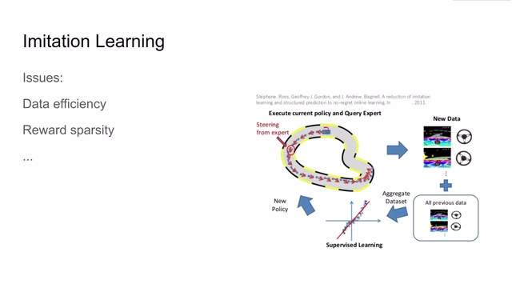
00:03:02–00:03:39 · 画面 004特别是我人带着这个车开一遍那已经很麻烦了你还让我在每一帧每一个时刻都要给这个 agent 一个 reward 那这个标记起来的工作量是非常大的还有比如说像亚拉利的一些游戏我操作过之后要跳过十几帧二十几帧才能够比如说得一分收到一个 reward 那么这也是 reward 它稀疏的一种体现那么在本文中作者使用了第三人称的示例以及在 latent space 中自定的一个 reward function 来巧妙地解决这两个问题那么具体的我们看他们怎么实现首先第一个问题在我们训练的过程中专家的示例是非常宝贵的我们请人类为机器人示范的时候我们希望一次的人类的操作能够获得尽可能多的数据
00:03:39–00:05:39 · 画面 005
00:03:39–00:05:39 · 画面 005那么为此呢作者就提出了我不仅使用第一人称的视角，我记录一下这个操作的影像，我再在旁边增加一个额外的视角，同时录制下专家的操作，甚至可以加更多的机位来录制，这样子呢我们就可以只操作一遍来获得很多的样本，那么这个方法呢也是非常常见的用来增加系统鲁棒性增加样本丰富度的一个方法比如像 NVIDIA 的 Dagger 它就使用三个摄像头同时的去抓三个方向的图像来帮助自动驾驶但是数据收集一时爽我们后面要怎样学习这些数据呢这里作者就提出了因为我们所有的 View 都是同时录制的我们可以很轻松的把他们的时间轴来对齐
这样在每一个时刻我们都能获得在不同视角观察的对同一个系统状态的观察的结果，那么如果我们想学到一种和视角无关的 representation，而且希望这个 representation 能够很好的表达系统状态随时间的变化，那么我们就可以选择一帧之后，把同一个时刻的另一个视角的图像作为 positive 的样本，而把其他时刻的其他视角的图像或者是本视角的图像所谓 Negative，我们希望我们选定的这一帧和 Positive 这个样本它们的 Latent Representation 尽量接近，最好就是完全一个，因为它们都是描述的同一时刻的系统的状态，而不同时刻产生的 Sample 因为它们描述的系统状态是不一样的，那么我们就希望它们之间相互尽量的远离
00:05:39–00:07:39 · 画面 006
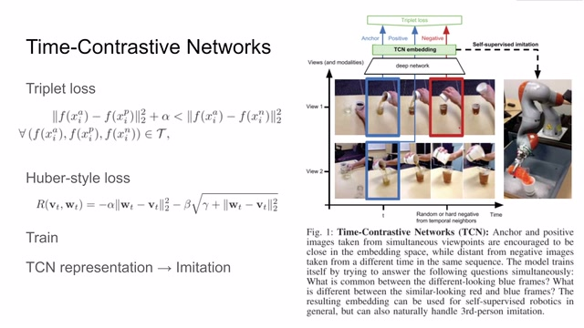
00:05:39–00:07:39 · 画面 006那这样子呢，我们就使得在 latent space 当中我们不同的系统状态它们的分布尽量远，尽量均匀的分布在我们整个 latent space 当中，而描述相同的一个系统状态 representation 呢在 latent space 中尽量相互靠近，那么有没有这样一种 loss 能够达到这样的效果呢那显然是有的前人呢提供了一种叫做 triplet loss 这里我们看假如说我们选定了这一帧我们称之为锚点 anchor 这里呢使用 XIA 来表示它经过 F 得到一个 representation 我们希望呢它和跟它相近的同一时刻的采集的样本我们这里叫 positive 它们之间的距离相互靠近而同时呢 anchor 和 negative 的 sample 就是其他时刻的样本
他们之间的距离呢尽可能远离也就是左边的距离远远的小于右边的距离而这个 alpha 就像一个 margin 一样用来把这两边的这个距离给它推开那么这样子呢就可以使我们尽量学到一个好的 embedding 而这个 embedding 呢和视角尽量无关而且希望能够反映更本质的系统当前的状态那么这就是作者如何通过 triplet loss 如何通过 contrastive learning来规避了大规模标记样本大规模标记 expert trajectory 那么刚刚我们还提到一个问题是 reward 在很多问题中我们缺乏一个 reward 来实时的评估当前的状态和目标的状态它们之间的差距如果没有一个好的 reward 会使得 reinforcement learning 变得非常艰难但是现在如果我们的 embedding 已经足够好可以准确的描述当前系统的状态
那么我们就完全可以通过对比当前 agent 观察到了系统的状态和 expert 它提供了示例的系统的状态它们这两个状态之间的差距来构成一个 reward 使我们的 agent 更加像 expert 的 trajectory 靠拢那么这里作者就定义了一个像 Huber loss 这样的一个 loss 这里的 wt 和 vt 就是在 t 时刻下 agent 观察到的状态和 expert 它提供的状态
00:07:39–00:09:18 · 画面 007
00:07:39–00:09:18 · 画面 007那么通过计算这两个 embedding 之间的距离我们就可以给出一个 reward 肯定是距离越接近它的 reward 越高而且这里作者使用一个形容 Huber loss 的这么一个 loss function 使得这两个 embedding 在差距比较大的时候能够提供稳定的梯度而在它俩差距比较小的时候能够精确的使这两个向量先靠拢那么这样就解决了我们如何给每一帧提供 reward 的问题那么作者是怎么样训练着这一个 agent 呢那很显然，首先我们需要一个好的 representation 好的 embedding，也就是左边的这一部分，我们就把所有的样本数据对齐的时间轴的这些样本全部都扔到我们数据库里面，然后对他们随机的采样进行学习，那么这个时候我们进行的就是一个完全的 self-supervised，这一阶段的目的就是学习一个好的 embedding 学习一个好的 representation 来表达当前系统的状态题
那么在我们有了一个好的 embedding 之后呢我们就可以在此基础上对吧进行 imitation 进行 reinforcement learning 进行这些东西我们就可以定义一个相对准确的 reward 那么当然了虽然这样两步的训练它是相对比较稳定相对比较可控的但是也没法避免的但是相对于那种一步到位那种 end to end 肯定是还是有进步的空间那么除了之前的这个 reinforcement learning 的任务呢
00:09:18–00:09:37 · 画面 008
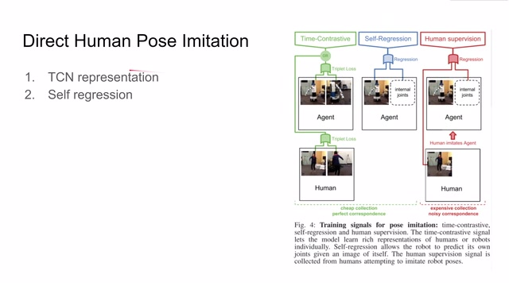
00:09:18–00:09:37 · 画面 008作者这里还提了一个叫 direct human poseimitation 的这么一个任务就是希望机械臂直接去模仿人当前的姿态那么与之前相类似的在第一阶段作者还是需要一个好的 embedding 那么使用 tcn 使用 triplet loss 就可以学到一个好的 embedding 而且这里使用的人类的样本其实就是你人随便做一个动作就可以了它并不需要复杂的标记对应等等
00:09:37–00:09:39 · 画面 009
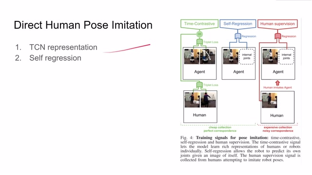
00:09:37–00:09:39 · 画面 00900:09:39–00:10:34 · 画面 010
00:09:39–00:10:34 · 画面 010那么当我们学到一个好的 embedding 之后呢，我们就可以进入 self regression 的这个环节了。Vision 需要学习如何通过操作这个电机把自己现在的状态移动到这个目标的状态。那么这个时候呢，它就看着自己当前的状态，因为这个状态呢已经学习了一个好的 embedding，它就可以通过这个图像呢来获得当前系统的信息同时它在结合一些关节内的传感器的信息它就可以全面的感知到现在自己所处的一个状态那么再从这个状态进行 regression 向目标的状态靠拢又可以最终学习到如何操作每一个电机来使这个机器达到最终的状态那么当然完成了这两步之后
00:10:34–00:10:36 · 画面 011
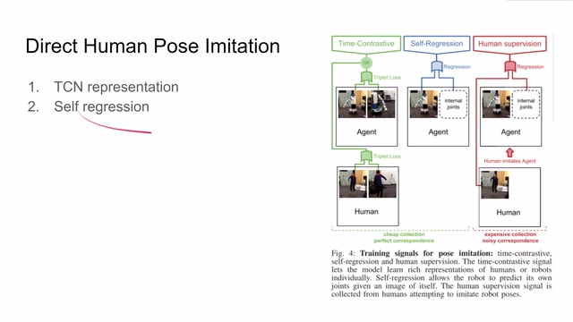
00:10:34–00:10:36 · 画面 01100:10:36–00:11:26 · 画面 012
00:10:36–00:11:26 · 画面 012其实这个机器呢就已经说是可以对人类的这个状态进行模仿。锦上添花式呢，我们会在最后的阶段加入人类的监督。那么这个样本应该如何获得呢？就是我们使机器人在随便摆一个状态，然后呢我们使人去模仿机器人现在的这个姿态。那么这样呢，我们就获得了人类的动作跟机器动作的这个对应的关系。当然呢，因为是人类在模仿机器每个人对动作的理解还原都是不同的所以实际上在这个阶段收集到的样本呢是噪声非常大的而且考虑到这种收集是很累的你要使人去模仿机器当下的状态所以呢在整个学习过程中 supervised 的这些样本或者说它参与的重要程度呢其实实际是很低的我们更多的主要还是依赖于这个 time contrastive 这一个 self-supervised 那么最后再来看作者做的一些实验
00:11:26–00:11:30 · 画面 013
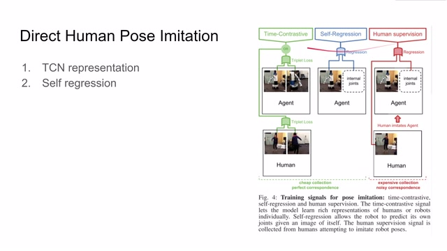
00:11:26–00:11:30 · 画面 01300:11:30–00:12:06 · 画面 014
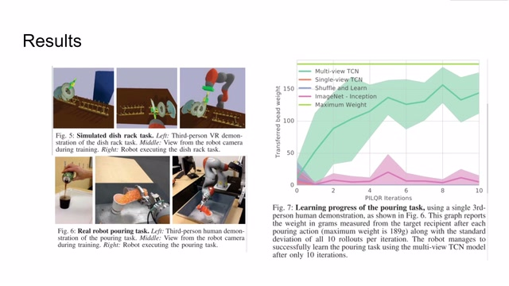
00:11:30–00:12:06 · 画面 014在这个模拟环境里呢机器学会了如何把这个盘子从一个碗架移动到另一个碗架在真实环境中呢机器通过学习人类如何倒水对吧来自己能够实现了从抓握到倒这么一个动作这里也可以看到作者测试了不同配置下倾倒任务的这个结果比如说这也是 multiview 提升就是我们有不同的相机来同时观察一个人类的 expert 进行操作那这里是 single view 从结果上来看 multiview 的效果是最好的那么还有呢这里作者汇报了 human pose imitation 的结果我们可以看到随着加的训练方法的增多那结果是越来越好这个呢其实也可以理解为一种变相的这个剥离实验那么总的来说本文使用 time contrastive 同一时刻的样本相互靠近不同时刻的样本相互远离这样的特点呢来对系统状态进行学习
00:12:06–00:13:02 · 画面 015
00:12:06–00:13:02 · 画面 015这个问题的配置呢是非常巧妙的而且他测试汇报的这些任务比如说倾倒任务比如说移动碟子任务还有像这种 imitation 任务他能够在提出这个任务的同时呢提出如何相应的量化评估 agent 的表现这些都是需要很多细致的工作的这篇文章虽然有一些年份了但是呢它还是很具有参考价值的好的以上就是我对这篇论文的简单的分析感谢您的收看再见
00:13:02–00:13:02 · 画面 016
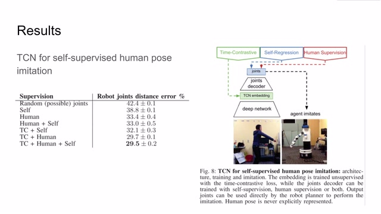
00:13:02–00:13:02 · 画面 016转写与来源说明 · 0 个自动复核提示
保留 30 个原始语音片段，0 个片段触发自动复核提示。提示仅用于定位可能的术语、重复或识别问题，不等于已确认错误。
讲解画面为源视频截图（640×360），不是可编辑 PPT 文件。全片按每秒 2 帧扫描内容变化，逐步展开页保留；连续动画保留代表画面。清晰度受源视频限制。
原视频：paper/合集_2026-10-16_机器人学/[论文简析]Time-Contrastive NetworksSelf-Supervised Learning from Video[1704.06888].mp4
SHA-256：44fed0532bdc76feee1d3b2ec19c98b22122ca96988fb247694ad5ba49a3e431
全文按视频语音与画面制作。原论文可从上方链接下载；完整资料包保留全文、原始逐字稿、字幕和校对记录。